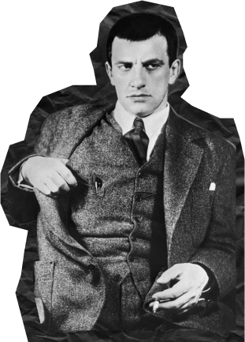

НА ГЛАВНУЮ
Владимир
Маяковский


Владимир
Маяковский
Владимир Владимирович Маяковский(1893–1930) — один из самых известных русских поэтов XX века, яркий представитель футуризма и революционной поэзии. Он родился 19 июля 1893 года в Багдаде (ныне Грузия) в семье учителя. В 1910-х годах Маяковский активно участвовал в художественной жизни, стал частью футуристического движения и начал публиковать свои стихи.
Его поэзия отличалась смелыми формами, яркими образами и социальной направленностью. Маяковский был не только поэтом, но и драматургом, сценаристом и художником. Он активно поддерживал Октябрьскую революцию 1917 года и стал одним из главных поэтов советской эпохи.
Среди его наиболее известных произведений — поэмы «Облако в штанах», «Человек», «Про это» и многие другие. Маяковский также писал пьесы и занимался агитационной деятельностью.
Несмотря на успехи, личная жизнь поэта была полна страданий. Он испытывал глубокие эмоциональные кризисы, что отразилось на его творчестве. В 1930 году, находясь в состоянии депрессии, Маяковский покончил с собой. Его творчество оставило значительное наследие и продолжает оказывать влияние на литературу и искусство.